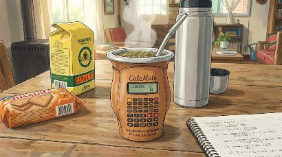

Acá te debería mostrar algo que hace que calcula algo y te da un resultado luego de aplicar alguna fórmula rara.
Pero naaaahhh es todo a ojo, confía en tu instinto.
Código, tecnología y mates... MUCHOS MATES

Acá te debería mostrar algo que hace que calcula algo y te da un resultado luego de aplicar alguna fórmula rara.
Pero naaaahhh es todo a ojo, confía en tu instinto.